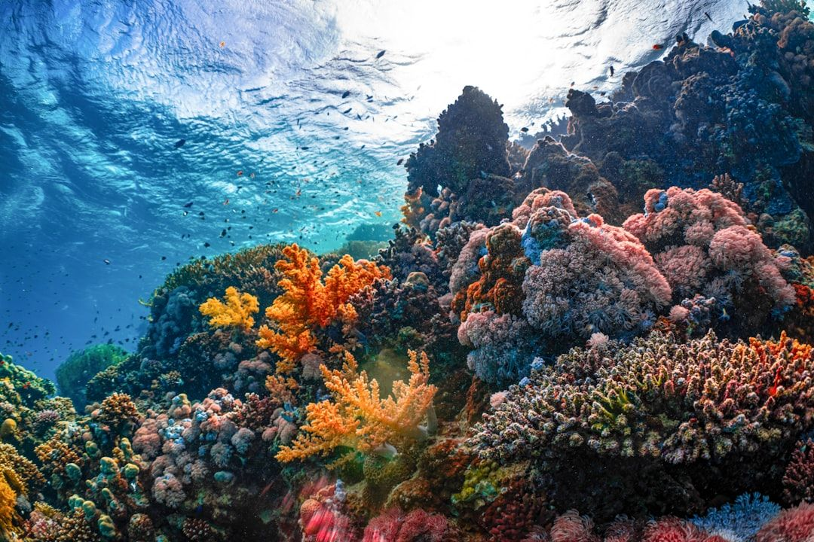
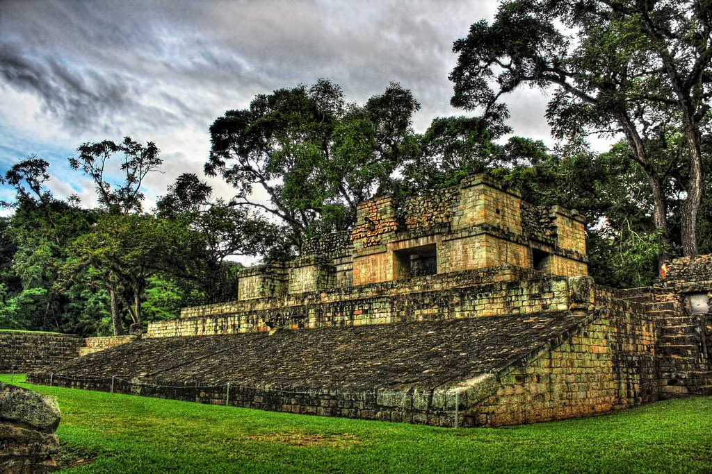
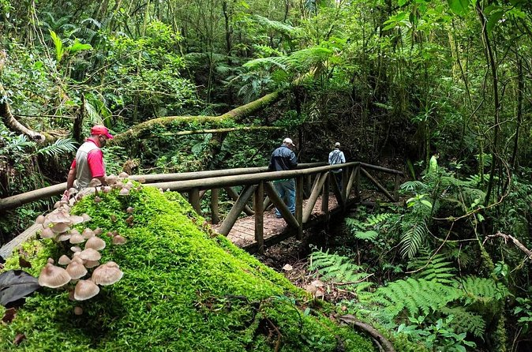

1. Islas de la Bahía y Barrera de Coral Mesoamericana

Arrecife coralino Islas de la Bahia
Las Islas de la Bahía en Honduras conformadas por Roatán, Utila y Guanaja constituyen el extremo sur del Sistema Arrecifal Mesoamericano, considerado la segunda barrera de arrecifes más grande del planeta. Este majestuoso ecosistema recorre más de 1.000 kilómetros desde la península de Yucatán en México, atravesando las costas de Belice y Guatemala hasta culminar en el Caribe hondureño, donde alberga una extraordinaria biodiversidad que incluye más de 65 especies de corales pétreos, 350 especies de moluscos y más de 500 especies de peces.
2. Ruinas de Copán

Ruinas de Copán
Las Ruinas de Copán son uno de los sitios arqueológicos mayas más impresionantes e importantes del mundo. Ubicada en el oeste de Honduras, cerca de la frontera con Guatemala, esta antigua ciudad alguna vez fue un poderoso centro de arte, astronomía y cultura de élite. Sus estelas intrincadamente talladas, escaleras jeroglíficas y plazas ceremoniales ofrecen una vívida ventana a la civilización maya clásica que floreció hace más de mil años.
3. Parque Nacional La Tigra

Parque Nacional La Tigra
El Parque Nacional La Tigra fue el primer parque nacional establecido en Honduras (1980) y es considerado el principal "pulmón verde" de Tegucigalpa. Este majestuoso bosque nuboso, gestionado por la Fundación AMITIGRA, se sitúa a unos 22 kilómetros al noreste de la capital y es una reserva vital que provee más del 30% del agua dulce de la ciudad. Es el destino idóneo para quienes buscan escapar del calor urbano, adentrarse en senderos cubiertos de neblina, observar aves exóticas como el quetzal y explorar la historia de la rica actividad minera de la zona.